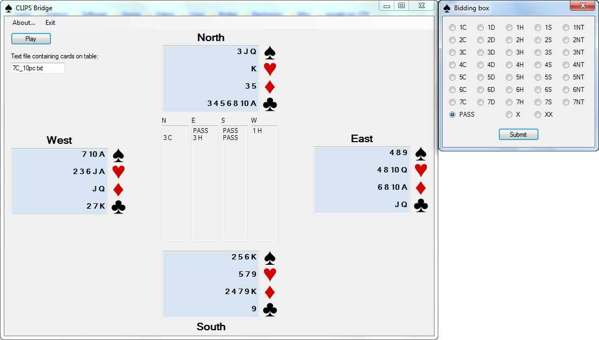

Celem projektu jest zaimplementowanie bota prowadzącego licytację w brydżu. Używany system licytacyjny to Standard American Yellow Card (SAYC). Do realizacji zadania użyto systemu CLIPS. W tym języku napisano bazę reguł używanych do ustalenia odzywki. Jako interfejs użytkownika stworzono aplikację okienkową przy użyciu Windows Forms, która komunikuje się z CLIPSem poprzez jego API do języka C.
Projekt powstał w ramach przedmiotu Metody Sztucznej Inteligencji prowadzonego na Wydziale Elektroniki Politechniki Wrocławskiej na kierunku Automatyka i Robotyka. Autorami projektu są Paweł Bogner i Marcin Dmochowski.
The goal of the project is to create a virtual bridge player capable of bidding. The player uses Standard American Yellow Card as the bidding system. The expert system used to determine bids was developed in CLIPS. In this framework was implemented a set of rules which reflect the bidding system guidelines. The user interface was created in Windows Forms. It cooperates with the expert system using CLIPS C API.
Program składa się z dwóch komponentów: aplikacji okienkowej i systemu eksperckiego. Komunikują się one ze sobą poprzez API CLIPSa w jezyku C. GUI zostało napisane w C++/CLI przy użyciu Windows Forms.
Dla systemu eksperckiego początkowo dostępna jest tylko informacja o swoich kartach. Na tej podstawie wyliczane są punkty (A–4, K–3, Q–2, J–1) oraz liczba kart w każdym z kolorów. Jest to wystarczająca wiedza do rozpoczęcia licytacji. Podczas licytacji do bazy wiedzy dodawane są także kolejne odzywki pozostałych graczy. Dzięki temu wirtualny gracz posiada pełną wiedzę o przebiegu licytacji.
Aplikacja zajmuje się rozdawaniem kart lub wczytaniem rozdania z pliku, co jest szczególnie użyteczne przy testach. Po ustaleniu rąk wszystkich graczy wyświetlane są posortowane karty i rozpoczyna się licytacja. Wirtualny gracz zajmuje zawsze pozycję N. W pierwszej rozgrywce "rozdającym" jest gracz N i to on rozpoczyna licytację. W kolejnych rozgrywkach rozdający zmieniają się zgodnie z ruchem wskazówek zegara. Odzywki innych graczy są odczytywane poprzez okno dialogowe i zapisywane do bazy wiedzy CLIPSa.
Zaimplementowano także rebidy na niektóre otwarcia, np. poparcie nowego koloru, zgłoszenie końcówki po inwicie.
Aby ułatwić testowanie, napisano program do generowania rozdań. Pozwalał on na wybranie dowolnej liczby kart dla gracza N, a następnie na wylosowanie pozostałych kart, także dla pozostałych graczy. Dzięki temu można było uzyskać pożądaną rękę, posiadając jednak resztę prawdziwej talii.
Poniżej zaprezentowano przykładowe rozdanie i przebieg licytacji.
| ♠ | ♥ | ♦ | ♣ | |
| N | 3 7 9 10 | 5 10 Q K | 2 A | 3 J K |
| E | 6 7 | 3 4 7 8 | 6 7 8 Q A | |
| S | 5 Q K A | 3 8 A | 9 J Q | 5 9 10 |
| W | 2 6 8 J | 2 4 9 J | 5 6 K | 2 |
| N | E | S | W | |
| 1. | PASS | 1 NT | PASS | |
| 2. | 3 NT | PASS | PASS | PASS |

Zaimplementowanie całego systemu okazało się bardziej złożone, niż przewidywano na początku. Implementacja jedynie otwarć i odpowiedzi zajęła około tysiąca linii kodu. Problem okazał się dużo bardziej złożony, niż to przewidywano na początku.
Oprócz tego wybór narzędzi nie do końca był trafny. Autorzy uważają, że lepiej byłoby realizować ten projekt w Prologu. Za tym rozwiązaniem przemawia kilka argumentów. Pierwszym z nich jest to, że Prolog sprawdza wszystkie reguły po kolei i wykonuje pierwszą, której warunki są spełnione. Dzięki temu dużo łatwiej jest zapanować nad dużą liczbą reguł, których warunki w CLIPSie są sprawdzane jednocześnie. Dodatkowo CLIPS nie jest popularnym systemem. W Internecie istnieje mało samouczków, jak również język ten nie jest przedmiotem dyskusji na wielu forach. Jedynym źródłem wiedzy na temet tego systemu byłu jego podręczniki użytkownika napisane w dość niejasny sposób. Pod tym względem Prolog zdecydowanie przewyższa CLIPSa.
W ramach projektu została stworzona struktura ramowa pozwalająca na stworzenie zaawansowanego gracza. Możliwości rozwoju są duże. Przy rozwoju oprogramowania została wzięta pod uwagę opcja zmiany pozycji gracza. Dzięki temu można doprowadzić np. do gry 3 graczy wirtualnych z człowiekiem, co może być dobrym treningiem dla początkującego gracza.